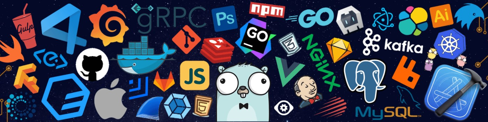

Hi, I'm Rudhresh S
Architecting Intelligent Agents, Model Context Protocols, and High-Throughput Cloud APIs.
Passionate about turning bleeding-edge LLM orchestration, multi-modal systems, and autonomous agent loops into production-grade, scalable software.

Model Context Protocol in Action
Simulating how LLM assistants interact with our CodeChef MCP Server, LeetCode MCP Server, and OmniRoute Gateway.
Production Systems & Open Source
Tools, infrastructure, and agent frameworks built to empower developers and enterprises with scalable AI.
CodeChef MCP Server
Comprehensive competitive programming MCP assistant with 18 tools: user profile analytics, Docker sandbox execution, Playwright browser contest submission, and self-repair retry engine.
OmniRoute
Universal free AI gateway: 1 endpoint, 375+ providers (150+ free), 1,400+ models. Features quota-aware auto-fallback, RTK compression saving 15–95% tokens, and full MCP integration.
LeetCode MCP Server
High-performance MCP integration turning LeetCode questions, daily challenges, test cases, and user profiles into structured JSON for Claude, Cursor, and autonomous coding agents.
OpenWhisper
Local speech-to-text dictation and meeting intelligence system with Whisper and Parakeet models. Supports shared engines over Tailscale LAN and integrated MCP history access.
Cloudflare Security Audit
Community-maintained fork of Cloudflare's security audit skill for coding agents — cross-platform CI, Windows support, and automated vulnerability scanning of Workers & DNS.
BMW Enterprise GenAI
Architecting production GenAI systems, multi-modal reasoning workflows, and internal intelligent tooling powering enterprise automotive software development.
Skills & Technologies
Generative AI & LLMs
- ▸ Multi-Agent Orchestration
- ▸ Model Context Protocol (MCP)
- ▸ Advanced RAG & Vector Search
- ▸ Multimodal AI Pipelines
- ▸ Claude, OpenAI, Gemini APIs
Languages & Runtime
- ▸ TypeScript & Modern JavaScript
- ▸ Python (FastAPI, AsyncIO, PyTorch)
- ▸ C++ (Competitive Programming)
- ▸ Go & Shell Scripting
- ▸ SQL & Query Optimization
Full-Stack Architecture
- ▸ Next.js (App Router) & React
- ▸ Node.js & Express
- ▸ FastAPI & Streamable HTTP/SSE
- ▸ Tailwind CSS & Shadcn/UI
- ▸ PostgreSQL, SQLite & Redis
Cloud, DevOps & Tools
- ▸ Docker & Container Sandboxing
- ▸ Cloudflare Workers & Serverless
- ▸ GitHub Actions CI/CD
- ▸ Linux & WSL Environment
- ▸ Playwright Web Automation
Experience & Milestones
Gen AI Developer
BMW Techworks India
Leading development of autonomous AI systems, multimodal intelligence pipelines, and resilient cloud services for enterprise mobility solutions.
Core Maintainer & Architect
Model Context Protocol & AI Gateways
Architecting open-source developer infrastructure, dual-runtime MCP protocols, and multi-provider token optimization routers.
Student Ambassador (MLSA)
Microsoft Learn Student Ambassadors
Delivering technical workshops on Azure Cloud computing, AI fundamentals, and modern full-stack web engineering.
Let's Build Something Exceptional
Have a project in mind, want to collaborate on agentic AI / MCP systems, or discuss opportunities? Let's connect.
Direct Email: officialrudhresh@gmail.com